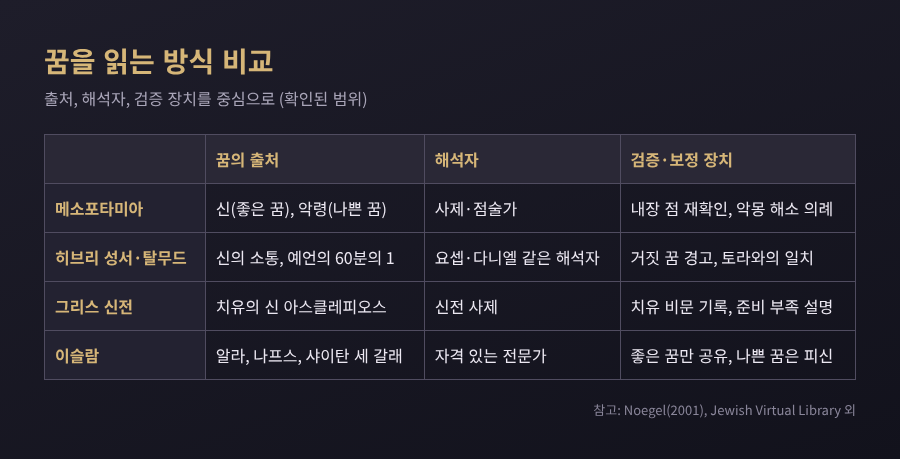
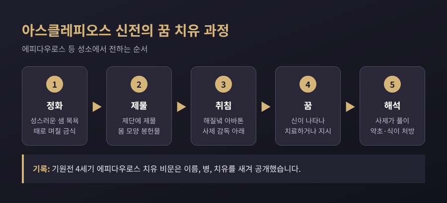
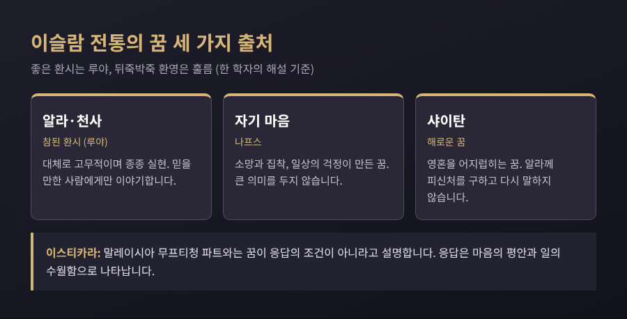
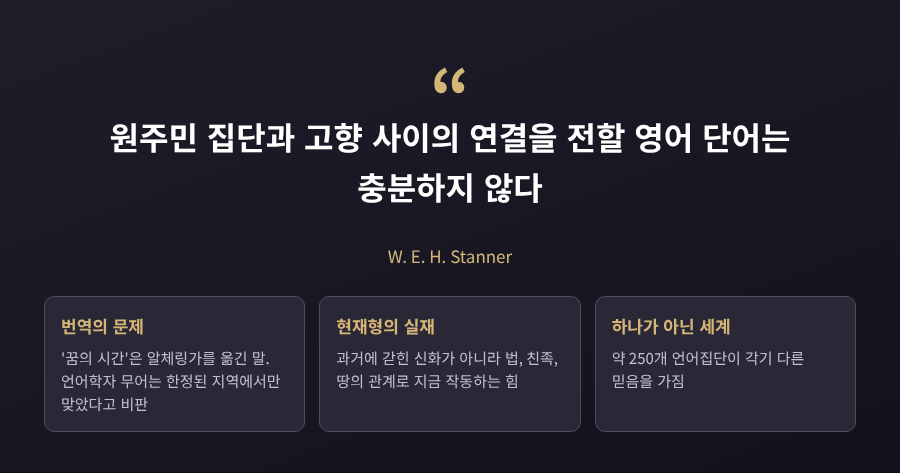
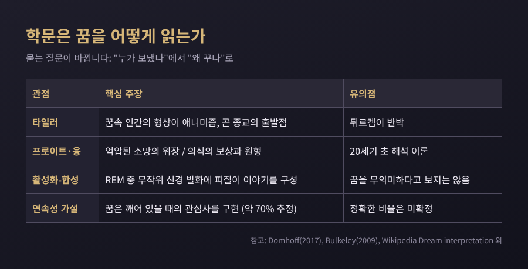

[종교] 종교 전통은 꿈을 신의 메시지로 읽었고, 종교학과 인지과학은 같은 경험을 다른 언어로 설명합니다. 이 글에서는 고대 근동과 히브리 성서, 그리스, 이슬람, 불교와 힌두교, 한국 민속, 호주 원주민의 사례를 차례로 살펴보고 마지막에 두 관점을 견줘 보겠습니다. 어느 신앙이 옳은지를 가리는 글은 아닙니다. 각 전통이 꿈을 어떻게 이해했는지를 비교하는 교양 글입니다.
핵심만 먼저 적으면 이렇습니다. 꿈을 의미 있는 소통으로 본 전통은 거의 예외 없이 해석자, 의례, 검증 장치를 함께 두었습니다. 꿈을 믿으면서도 의심하는 장치가 한 세트로 따라붙었다는 점이 눈에 띕니다.
메소포타미아에서는 꿈이 왕의 정치와 직결되었습니다. 라가시의 통치자 구데아는 기원전 2100년대 무렵 수수께끼 같은 꿈을 두 번 꾸었습니다. 여신 난셰, 혹은 그를 대변한 사제가 이를 "닌기르수 신전을 지으라"는 명령으로 풀었습니다. 구데아는 이에 만족하지 않고 동물 내장 점으로 두 번째 확인을 받았습니다. 꿈 해석 위에 다른 점술로 검증을 한 번 더 얹은 셈입니다.
바빌로니아에는 꿈 징조를 모은 책도 있었습니다. 꿈의 신 자키쿠를 부르며 시작하는 이 꿈책은 약 백 개의 조항이 남아 있고, 해석은 말장난에 자주 기댔습니다. 나쁜 꿈에는 대응책도 있었습니다. 꿈을 인형에 옮겨 부수거나 손을 씻으며 태양신에게 호소하는 의례였습니다. 꿈을 받아들이되, 흉한 꿈은 지울 수 있다고 본 것입니다.
히브리 성서는 이런 징조 목록이나 의례 문서를 전하지 않고, 이야기 형태의 꿈만 남겼습니다. 요셉은 파라오의 꿈을 풀며 "해석은 하나님께 있다"고 말합니다. 다니엘 2장에서는 점술가들이 꿈의 내용조차 맞히지 못하자 다니엘이 하나님께 구해 꿈과 해석을 함께 내놓습니다. 학계는 이 이야기를 낮은 신분의 사람이 궁정이 풀지 못한 문제를 푸는 궁정 설화의 틀로 읽습니다. 요셉과 다니엘이 닮아 보이는 이유입니다.
성서는 꿈을 경계하기도 합니다. 예레미야서는 거짓 꿈을 말하고, 신명기 13장은 토라와 어긋나는 꿈 점술가의 말을 듣지 말라고 합니다. 탈무드는 꿈을 "예언의 60분의 1"로 보면서 "해석되지 않은 꿈은 읽지 않은 편지와 같다"고 했습니다. 한 현자가 해몽가 스물네 명을 찾아가 서로 다른 해석을 들었는데 모두 맞았다는 일화도 전합니다. 해석이 하나로 고정되지 않는다는 인식이 이미 있었던 것입니다.

그리스에서는 꿈을 구하러 일부러 신전에 갔습니다. 의술의 신 아스클레피오스의 성소에서 환자는 아바톤이라 불린 잠자리에 누워 치유 꿈을 기다렸습니다. 에피다우로스의 아바톤은 길이 약 70미터, 너비 약 10미터였다고 전합니다.
순서는 이랬습니다. 먼저 성스러운 샘에서 몸을 씻고, 때로는 며칠씩 금식했습니다. 제물을 바친 뒤 해질녘에 사제가 지켜보는 가운데 누웠습니다. 신이 꿈에 나타나 직접 치료하거나 지시를 내린다고 믿었고, 아침에 꿈을 말하면 사제가 풀이해 약초나 식이를 처방했습니다. 낫지 않은 사람은 준비가 부족했다는 말을 듣기 일쑤였다고 합니다. 실패의 원인을 환자에게 돌리는 구조가 이미 들어 있었던 것입니다.

기록도 남았습니다. 기원전 4세기 에피다우로스의 치유 비문은 환자의 이름과 출신, 병과 치유를 적었습니다. 아이기나의 소년이 신성한 개에게 낫고, 트로이젠의 여성이 꿈에서 촌충을 제거받았다는 식입니다. 타소스의 헤르몬은 감사 제물을 하지 않아 다시 눈이 멀었다고 적혀 있습니다. 이 비문은 감사의 기록이면서 신전의 홍보였을 것이라고 풀이됩니다.
2세기 연설가 아일리오스 아리스티데스는 수십 년의 투병 중 페르가몬 신전에서 얻은 꿈을 《성스러운 이야기》 여섯 권으로 남겼습니다. 금식, 사혈, 냉수욕 같은 처방이 꿈으로 내려왔다고 적었습니다. 옥스퍼드 고전 사전은 이 책을 이교도 저자가 쓴 가장 충실한 1인칭 종교 체험 기록으로 평가합니다. 다만 그의 병이 실제였는지, 그 체험이 무엇이었는지는 학자마다 의견이 갈립니다.
이런 인큐베이션은 그리스만의 것이 아니었습니다. 이집트에도 성소에서 자며 꿈을 청하는 관행이 있었고, 성서에서는 야곱이 브엘세바에서 신의 지시를 구한 대목이 거론됩니다. 솔로몬이 기브온에서 꿈으로 계시를 받은 장면은 같은 부류로 보는 학자와 구분하는 학자가 있습니다. 후대에는 비잔틴 기독교의 의사 성인 숭배로도 이어졌다고 설명됩니다.
이슬람 전통에서 꿈은 이름부터 갈립니다. 좋은 환시를 루야, 뒤죽박죽 환영을 훌름이라 부릅니다. 사히흐 부하리 6989의 하디스는 "좋은 꿈은 예언직의 46분의 1"이라고 전합니다. 앞서 본 탈무드의 60분의 1과 비율은 다르지만, 꿈을 예언의 한 조각으로 본 발상은 겹칩니다.
한 하나피 학자의 해설에 따르면 꿈의 출처는 셋입니다. 알라나 천사에게서 온 참된 환시, 자기 마음(나프스)에서 나온 소망과 집착, 샤이탄이 어지럽히는 해로운 꿈입니다. 좋은 꿈은 믿을 만한 사람에게만 말하고, 나쁜 꿈은 알라께 피신처를 구하며 다시 말하지 않습니다. 해몽은 전문가의 몫이고, 이븐 시린(654~728)은 자격 없는 해몽가를 경계했다고 전합니다.
이스티카라는 흔히 "꿈으로 답을 받는 기도"로 알려져 있습니다. 그런데 말레이시아 연방영토 무프티청의 파트와는 꿈이 응답의 조건이라는 믿음에 근거가 없다고 설명합니다. 응답은 마음의 평안과 일이 수월하게 풀리는 모습으로 나타나며, 확신이 서지 않으면 기도를 반복하고 일상을 이어 가라고 안내합니다. 이 파트와는 부하리 1166의 하디스를 근거로 삼았습니다. 지역과 집단에 따라 관행은 다를 수 있다는 점은 덧붙여 둡니다.

불교에는 꿈이 가장 유명한 탄생 서사의 시작점으로 나옵니다. 마야 부인은 흰 코끼리가 오른쪽 옆구리로 들어오는 꿈을 꾸었고, 학식 있는 사제는 "아들이 세계를 다스리거나 세속을 버리고 붓다가 되리라"고 풀었습니다. 이 장면은 바르후트, 사르나트, 아잔타 등 여러 유적에서 도상으로 남아 있습니다.
그런데 같은 불교가 꿈을 "허망하다"고도 합니다. 대승 문헌을 정리한 한 해설은 꿈을 일곱 부류로 나눕니다. 공(空)의 비유, 신이나 보살의 메시지, 전조, 몸과 마음 상태의 신호, 낮 경험의 되풀이 등입니다. 꿈이 환영이라는 가르침과 꿈이 전조라는 믿음이 한 전통 안에 함께 있는 셈입니다. 이 해설은 꿈 이미지는 비어 있어도 "해탈의 또 다른 문"이 될 수 있다고 정리합니다. 한 개인의 해설이라는 점은 감안해야 합니다.
힌두교 쪽에서는 꿈이 의식의 지도 속에 놓입니다. 만두키야 우파니샤드는 깨어 있음, 꿈, 깊은 잠의 세 상태를 말하고, 그 바탕이자 너머를 "넷째"라는 뜻의 투리야라 부릅니다. 찬도기야 우파니샤드에서는 꿈속의 자아도 깊은 잠도 참된 자아로 인정되지 않습니다. 이 흐름이 불교의 영향을 받았는지를 두고 학자들의 견해는 엇갈립니다. 힌두교의 구체적 해몽 관행은 이번에 충분히 확인하지 못해 다루지 않습니다.
한국에서는 태몽이 대표적입니다. 아기가 생기기 전후에 꾸는 꿈을 징조로 읽는 풍습으로, 어머니가 꾸는 경우가 많지만 아버지나 할머니, 친구에게 나타난다고도 합니다. 이이의 아명이 '현룡', 태어난 방이 '몽룡실'이었다는 이야기는 검은 용 태몽에서 나왔다고 전합니다. 문희가 언니 보희의 꿈을 비단 치마로 샀다는 신라 설화에서는 꿈이 거래되는 물건이 됩니다. 이 사례들은 대중 해설에 실린 것이라 사료 출처까지 확인하지는 못했습니다.
조선 시대의 꿈 인식은 의외로 다층적이었습니다. 김성수의 2006년 논문에 따르면 1640년 박지영은 꿈으로 조상의 잃어버린 묘를 찾았다고 주장했고, 조정이 이를 약 2년간 논의했습니다. 성리학자들은 꿈을 학문의 깊이나 기(氣)의 작용으로 읽었습니다. 《동의보감》은 꿈을 오장의 허실이 드러난 병증의 신호로 다뤘습니다. 19세기의 이규경은 꿈을 잠든 사이 떠도는 혼으로 보면서 꿈으로 잉태한다는 주장에는 의심을 표했습니다. 믿음과 회의가 같은 시대에 공존했습니다.
태몽에는 비판도 따릅니다. 꿈꾼 사람의 바람이 투영된 것이라는 해석, 임신 중 호르몬 변화로 꿈이 생생해진다는 설명, 맞은 태몽만 회자된다는 선택적 기억 지적이 있습니다. 같은 상징이 나와도 성별이 반대인 경우가 많다는 설명도 있습니다.
호주 원주민의 'Dreaming(꿈꾸기)'은 조금 다른 이야기입니다. 이것은 밤에 꾸는 꿈의 해몽 전통이 아닙니다. 조상 존재들이 땅을 만들고 법과 친족 질서를 세운 실재를 가리키는 말이고, 스태너는 이를 시간이 겹치는 "에브리웬"이라 표현했습니다. 이 용어는 1890년대 이후 길런과 스펜서가 알체링가를 "꿈의 시간"으로 옮기며 퍼졌는데, 언어학자 무어는 그 등식이 한정된 지역에서만 맞았다고 비판합니다. 약 250개 언어집단이 각기 다른 믿음을 가졌다는 점도 있어, 하나로 묶어 말하기 어렵습니다. 밤 꿈 자체가 조상과 소통하는 통로였던 사례는 이번 조사에서 확인하지 못했습니다.

이제 시선을 바꿔 보겠습니다. 전통이 꿈을 "누가 보냈는가"로 물었다면, 학문은 "왜 꾸는가"로 묻습니다.
19세기 인류학자 E. B. 타일러는 꿈에 나타나는 인간의 형상이 애니미즘, 곧 종교의 출발점이 되었다고 보았습니다. 뒤르켐은 꿈이 모호한 기억만 남겨 종교의 기원이 될 수 없다고 반박했습니다. 합리주의자로 불리는 쪽이 꿈에서 종교를 찾고, 감정을 중시한 쪽이 꿈을 가볍게 본 셈입니다.
20세기에는 프로이트가 1900년 《꿈의 해석》에서 꿈을 억압된 소망의 위장으로 읽었고, 융은 꿈이 의식의 태도를 보상하고 원형을 드러낸다고 보았습니다. 1970~80년대 홉슨 등의 활성화-합성 가설은 REM 수면 중 무작위 신경 발화에 피질이 이야기를 지어 붙인다고 설명합니다. 이를 "꿈은 부산물"로 요약하는 글이 많지만, 같은 설명에서도 이 가설이 꿈을 무의미하다고 보는 것은 아니라고 덧붙입니다.
종교와 직접 이어지는 연구도 있습니다. 도모프의 연속성 가설은 꿈이 깨어 있을 때의 관심사를 구현하며, 그 비율이 약 70%로 추정된다고 봅니다. 정확한 비율은 아직 확정되지 않았습니다. 켈리 불리는 2009년 논문에서 장기 꿈 일지 두 건을 분석했습니다. 3,116개의 꿈을 남긴 한 사람의 일지에서 "God"는 0.6%, "church"는 1.2%의 꿈에 등장했습니다. 엄격한 침례교 가정에서 자라 지금은 교회를 떠난 다른 일지의 주인은 스스로 꽤 영적이라고 했지만, 꿈은 그렇게 보이지 않았습니다. 불리는 꿈이 공적 행동보다 정서적 현실을 비춘다고 해석했습니다. 다만 표본이 둘뿐이고 현대 미국인이라는 한계가 분명합니다.
네팔 힌두교인의 꿈 보고를 다룬 인지과학 논평은 다른 각도를 보여줍니다. 꿈속 초자연적 행위자는 한 보고에 대체로 하나 정도의 낯선 요소만 가졌고, 우상이 행위자로 나오는 경우가 많은 것은 일상의 우상 문화가 꿈에 이어진 결과로 풀이됩니다. 단일 사례 기반의 논평이라 확정적 결론은 아닙니다.

전통이 꿈을 읽는 방식과 학문이 꿈을 읽는 방식은 생각보다 가까운 지점이 있습니다. 두 쪽 모두 꿈을 "아무 의미 없는 잡음"으로만 두지 않았습니다. 전통은 해석자와 의례로, 학문은 일지와 통계로 의미를 따졌습니다. 반대로 두 쪽 모두 꿈의 의미를 쉽게 단정하는 일은 경계했습니다. 성서의 거짓 꿈 경고, 이슬람의 세 출처 구분, 조선의 회의론이 그렇고, 불리와 도모프의 한계 인정이 그렇습니다.
다른 점도 분명합니다. 전통은 꿈의 출처를 묻고 응답을 구하지만, 학문은 꿈이 어떻게 만들어지고 무엇을 반영하는지를 묻습니다. 학문은 꿈이 신에게서 오는지 아닌지를 판정할 수 없습니다. 그것은 학문의 질문이 아니기 때문입니다.
정리하면 이렇습니다. 꿈은 어느 시대에나 사람이 자기 삶의 불확실성을 건네 놓던 자리였습니다.
"꿈을 믿는 방식은 달라도, 꿈을 가려 듣는 법은 어느 전통에나 있었습니다."
가까운 가족과 고향에도 꿈을 둘러싼 이야기가 전해 올 것입니다. 그 이야기를 한 번 떠올려 보시기를 권합니다.